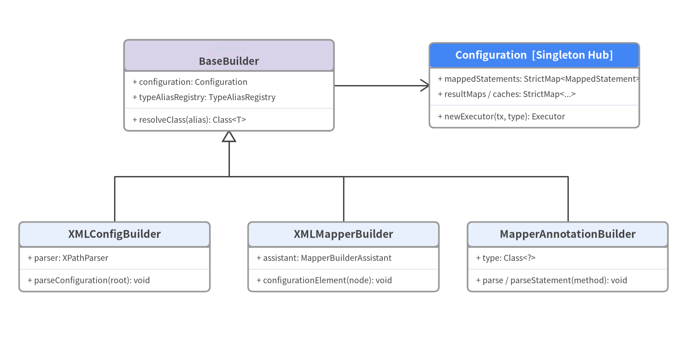
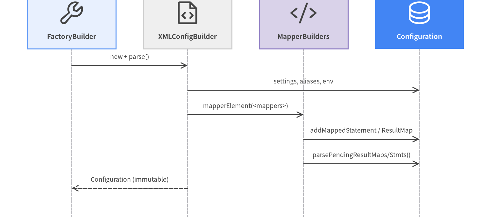

2. 起動コンパイルと Builder 群
アプリケーション起動時、MyBatis 3 は外部の XML 設定ファイル（mybatis-config.xml）、XML マッパー（*Mapper.xml）、および Java インターフェース上のアノテーション（@Select、@Insert、@Results、@CacheNamespace）を解析し、単一のランタイム・レジストリである org.apache.ibatis.session.Configuration に集約します。
org.apache.ibatis.builder.* パッケージ内のすべてのビルダークラスは抽象基底クラス BaseBuilder (src/main/java/org/apache/ibatis/builder/BaseBuilder.java) を継承しており、Configuration・TypeAliasRegistry・TypeHandlerRegistry への共通リゾルバメソッドを共有しています。

Source Code
from drawlib.canvas import save, setup
from drawlib.diagrams.class_diagram import ClassDiagram, ClassNode
from drawlib.fonts import FontMonoSpace, FontRoboto
from drawlib.styles import Colors, Styles
setup(width=144, height=74, dpi=150)
cd = ClassDiagram(
width=144.0,
height=74.0,
node_style=Styles.Neutral.patch(
shape_fill_color=Colors.White,
shape_line_color=Colors.Gray6,
text_color=Colors.Dark,
text_font=FontMonoSpace.ROBOTO_MONO_REGULAR,
text_size=9.2,
),
header_style=Styles.PrimaryNeutral.patch(
shape_line_color=Colors.Gray6,
text_color=Colors.Dark,
text_font=FontRoboto.ROBOTO_BOLD,
text_size=9.8,
),
edge_style=Styles.Dark.patch(line_width=1.4),
edge_text_style=Styles.DarkBold.patch(text_font=FontRoboto.ROBOTO_BOLD, text_size=9.2),
)
hero_hdr = Styles.PrimaryFlat.patch(text_color=Colors.White, text_font=FontRoboto.ROBOTO_BOLD, text_size=9.8)
sec_hdr = Styles.SecondaryNeutral.patch(shape_line_color=Colors.Gray6, text_color=Colors.Dark, text_font=FontRoboto.ROBOTO_BOLD, text_size=9.8)
n_base = cd.add(
ClassNode("BaseBuilder", stereotype="abstract", width=44.0, header_style=sec_hdr)
.add_attribute("configuration", "Configuration")
.add_attribute("typeAliasRegistry", "TypeAliasRegistry")
.add_method("resolveClass", "alias", "Class<T>"),
xy=(48.0, 56.0),
)
n_cfg = cd.add(
ClassNode("Configuration [Singleton Hub]", width=44.0, header_style=hero_hdr)
.add_attribute("mappedStatements", "StrictMap<MappedStatement>")
.add_attribute("resultMaps / caches", "StrictMap<...>")
.add_method("newExecutor", "tx, type", "Executor"),
xy=(112.0, 56.0),
)
n_xml_cfg = cd.add(
ClassNode("XMLConfigBuilder", width=40.0)
.add_attribute("parser", "XPathParser")
.add_method("parseConfiguration", "root", "void"),
xy=(24.0, 20.0),
)
n_xml_map = cd.add(
ClassNode("XMLMapperBuilder", width=40.0)
.add_attribute("assistant", "MapperBuilderAssistant")
.add_method("configurationElement", "node", "void"),
xy=(72.0, 20.0),
)
n_ann_map = cd.add(
ClassNode("MapperAnnotationBuilder", width=42.0)
.add_attribute("type", "Class<?>")
.add_method("parse / parseStatement", "method", "void"),
xy=(119.0, 20.0),
)
cd.connect(n_base, n_cfg, "association", directed=True, start_side="right", end_side="left")
cd.connect(n_xml_cfg, n_base, "inheritance", start_side="top", end_side="bottom")
cd.connect(n_xml_map, n_base, "inheritance", start_side="top", end_side="bottom")
cd.connect(n_ann_map, n_base, "inheritance", start_side="top", end_side="bottom")
cd.draw(xy=(0.0, 0.0))
save()
ステップ別の起動コンパイル処理フロー
new SqlSessionFactoryBuilder().build(inputStream) (src/main/java/org/apache/ibatis/session/SqlSessionFactoryBuilder.java:50-85) が呼び出されると、以下の順序で Configuration が構築されます。
XMLConfigBuilderと XXE 対策済みXPathParser:XMLConfigBuilderはXPathParser(src/main/java/org/apache/ibatis/parsing/XPathParser.java:233-243) を生成します。この際、XMLMapperEntityResolverによってクラスパス内のローカル DTD (org/apache/ibatis/builder/xml/*.dtd) を解決し、FEATURE_SECURE_PROCESSING = trueおよびexpandEntityReferences = falseを強制して XXE (CWE-611) を防止します。parseConfiguration()が<properties>-><settings>-><typeAliases>-><plugins>-><objectFactory>-><environments>-><databaseIdProvider>-><typeHandlers>-><mappers>の順に解析します。
- XML マッパーと Java アノテーションの双方向連携 (
XMLMapperBuilder<->MapperAnnotationBuilder):<mapper resource="..."/>からXMLMapperBuilderが呼ばれた場合でも、configuration.addMapper(UserMapper.class)からMapperAnnotationBuilderが呼ばれた場合でも、対応するインターフェースまたは同パスの XML リソースが自動的に相互検出・バインドされます (XMLMapperBuilder.bindMapperForNamespace())。MapperBuilderAssistantがすべての識別子にnamespace + "." + idを付与し、Cache・ResultMap・MappedStatementを生成してConfigurationに登録します。
- 前方参照の遅延解決 (
IncompleteElementExceptionキュー):<resultMap extends="..."/>や<cache-ref namespace="..."/>が未解析のマッパーを参照している場合、IncompleteElementExceptionを捕捉してConfigurationの保留リスト（incompleteResultMaps/incompleteCacheRefs/incompleteStatements）に積み、各マッパー解析完了時にparsePending*()で再解決します。

Source Code
from drawlib.canvas import save, setup
from drawlib.diagrams.sequence import Participant, PhosphorIcon, SequenceDiagram
from drawlib.styles import Styles
setup(width=144, height=64, dpi=150)
sd = SequenceDiagram(
node_style=Styles.Dark,
node_text_style=Styles.DarkBold.patch(text_size=9.8),
edge_style=Styles.Dark.patch(line_width=1.4),
edge_text_style=Styles.Dark.patch(text_size=9.2),
node_card_style=Styles.Neutral,
col_width=34.0,
step_y=7.2,
)
p_builder = sd.add(Participant("FactoryBuilder", icon=PhosphorIcon.WRENCH, width=26, card_style=Styles.PrimaryNeutral))
p_xmlcfg = sd.add(Participant("XMLConfigBuilder", icon=PhosphorIcon.FILE_CODE, width=26, card_style=Styles.Neutral))
p_mapper = sd.add(Participant("MapperBuilders", icon=PhosphorIcon.CODE, width=26, card_style=Styles.SecondaryNeutral))
p_config = sd.add(
Participant(
"Configuration",
icon=PhosphorIcon.DATABASE,
width=26,
style=Styles.White,
text_style=Styles.WhiteBold.patch(text_size=9.8),
card_style=Styles.PrimaryFlat,
)
)
p_builder.request(p_xmlcfg, "new + parse()")
p_xmlcfg.request(p_config, "settings, aliases, env")
p_xmlcfg.request(p_mapper, "mapperElement(<mappers>)")
p_mapper.request(p_config, "addMappedStatement / ResultMap")
p_mapper.request(p_config, "parsePendingResultMaps/Stmts()")
p_xmlcfg.reply(p_builder, "Configuration (immutable)")
sd.draw(xy=(72, 32), align="center")
save()
Configuration.StrictMap<V> の内部設計：短縮キー登録と曖昧性検出
Configuration 内の主要マップ（mappedStatements, caches, resultMaps, parameterMaps, keyGenerators, sqlFragments）は、ConcurrentHashMap<String, V> を拡張した専用クラス StrictMap<V> (src/main/java/org/apache/ibatis/session/Configuration.java:1022-1102) で実装されています。
- 完全修飾キー＋短縮キーの二重登録:
put("com.example.UserMapper.findById", ms)が呼ばれると、完全修飾名"com.example.UserMapper.findById"と短縮名"findById"の両方でエントリが登録されます。 Ambiguityセンチネルによる衝突保護: 別マッパーで"com.example.OrderMapper.findById"が登録されると、短縮キー"findById"の値は内部オブジェクトAmbiguityに置き換えられます。この状態で短縮名session.selectOne("findById")を呼ぶと、どの名前空間同士が衝突したかを明示したIllegalArgumentExceptionが送出され、一方でUserMapperインターフェース経由の完全修飾呼び出しは常に一意に解決されます。